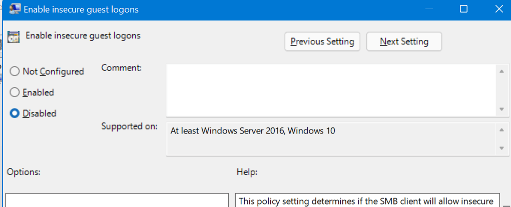
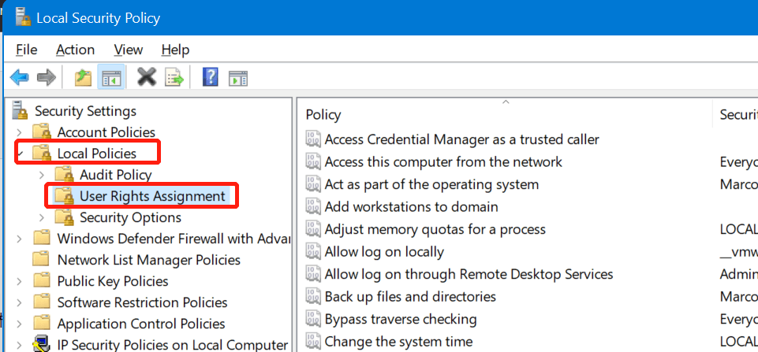

这篇文章上次修改于 302 天前，可能其部分内容已经发生变化，如有疑问可询问作者。
最近研究了下 Windows 的共享设置，目的是在同一局域网下共享文件夹给其他设备读写。下面从原理和实际操作上介绍下共享过程。
SMB
Windows 共享使用 Server Message Block (SMB) 协议，它可以让应用程序访问本机网络下的其他设备的文件及服务。
SMB 是 IBM 在 1980 年代创造的协议，目前已经有了很多的升级及分支。
SMB 协议允许应用程序访问远程主机的文件和资源如打印机等，也可以同远程主机上设置了接收 SMB 协议的应用程序通信。它运行在网络的 layer 7 层，也就是 application 应用层，使用 TCP/IP 的 445 端口传输数据。
从 Windows 95 开始，微软将引入了 SMB 协议的支持。Linux 端，samba 作为一个开源软件提供 SMB 的支持。
SMB 协议也是在不断发展的，下面是一个简单的版本更新过程：
- SMB 1.0 (1984): IBM 为 DOS 下的文件共享创造了 SMB
- CIFS (1996): 微软开发了 SMB 的分支版本并集成在 Windows 95，添加了大文件的支持，直接在 TCP/IP 传输
- SMB 2.0 (2006): 在 Windows Vista 和 Windows Server 2008 中发布. 提升了性能
- SMB 2.1 (2010): 在 Windows Server 2008 R2 和 Windows 7 中发布
- SMB 3.0 (2012): 在 Windows 8 和 Windows Server 2012 中发布. 提升了性能，增加备份，安全和管理功能
- SMB 3.02 (2014): 在 Windows 8.1 和 Windows Server 2012 R2 中发布. 提升性能并完全停止支持 CIFS/SMB 1.0
- SMB 3.1.1 (2015): 在 Windows 10 和 Windows Server 2016 中发布
在 2017 年，利用 SMB 1.0 的漏洞，WannaCry 勒索软件在互联网中大规模传播，微软虽然立刻发布了补丁，但专家还是建议立刻停止运行 SMB 1.0 协议。
下面介绍在 Windows 10 中配置共享文件夹。
关闭 smb1.0
由于 smb1.0 过于久远且不安全，所以我们最好将其关闭，默认情况下系统中他也是关闭的。
系统搜索并打开 打开或关闭 Windows 功能 turn windows features on or off：
在其中找到 smb1.0 并将其关闭，可能会提示需要重启系统：
Windows 设置共享
下面配置共享， 步骤如下：
- 新建一个用户专门用于共享文件的授权，并合理设置此用户的权限；
- 合理设置网络共享和系统安全的相关设置；
- 开启共享，授权指定用户；
创建专用用户
搜索并打开计算机管理 computer management：
找到本地用户和组，点击用户文件夹：
右键点击 new user 创建新用户，设置用户名和密码，下面选中用户不可修改密码和密码永不过期：
配置用户权限
首先禁用启用不安全的来宾登录，win + r 搜索 gpedit.msc 本地组策略编辑器:
如下路径找到选项：
双击进入设置，关闭此选项并确认：

然后 win + r 搜索 secpol.msc 打开本地安全策略，配置本地用户权限分配：

首先配置可以从网络访问本机的用户：
双击进入后点击 add user 添加我们刚刚创建的用户：
在下方输入我们创建的用户名，然后点击右侧的 check names 自动匹配用户名：
确认后再列表中就出现了对应用户，注意如果列表中有 everyone 等其他用户时，为了安全起见可以将它们从列表中删除。完成后点击 ok 确认修改。
然后配置这个用户拒绝本地登录和拒绝远程桌面登录，因为我们创建这个用户只是为了 smb 共享登录使用。也是在本地用户权限分配页面找到对应选项并配置此用户到列表：
开启有保护的共享
首先打开控制面板，进入 network and Internet：
点击 network and sharing center：
点击 change advanced sharing settings：
在 current profile 中打开网络发现和文件共享：
然后在 all network 中打开密码保护：
控制面板配置完成后，我们开始配置需要共享的文件夹。
文件夹共享
在需要共享的文件夹上点击右键，选择属性：
在 share 选项卡中点击 advanced share：
选中 share this folder：
点击 permission：
如果有先将 everyone 用户删掉，然后点击 add 添加 marco 用户，点击 check names 自动补全：
然后配置用户权限，根据需要设置读写权限，这里直接选中 full control：
然后还有一步很重要，设置 marco 用户对此共享文件夹具有访问权限，否则也会提示无法访问文件夹，点击 security：
如果用户列表里没有 marco 用户，则需要添加进去，点击 edit 添加用户，方法和上面的方法类似，最后 marco 用户在列表里面即可，可以配置用户权限：
点击 ok 保存设置。
确认后共享文件夹就配置完成了。
访问共享文件
下面介绍在其他局域网设备访问主机的共享文件夹。
Windows
在 Windows 上，打开 file explorer，点击 network：
在右侧就是本地网络下启用了网络发现的设备列表，点击进入设置了共享文件夹的设备名称，根据提示输入配置好的用户名和密码就可以访问了：
也可以在地址栏直接输入共享路径地址，以双反斜线\\开头后面是设备 IP 或名称，如：\\DESKTOP-BS3C55D。
关于设备的名称，可以在终端通过 whoami 命令查询：
iPhone
在支持 SMB 协议的设备或应用程序中都可以打开 Windows 共享的文件，下面介绍通过 iPhone 的 files app 来连接到 Windows 共享目录。
打开 files app，点击右上角的 ... 选择 connect to server：
在 server 中输入共享主机的地址，这里直接输入 IP 地址：
输入用户名和密码，完成后就可以访问到共享目录了：
如果文件夹设置的是可读写权限，就可以在手机上传输文件到共享目录了。
参考链接：
Server Message Block Protocol (SMB protocol)
Windows 10/ 11 下安全并正确地使用 SMB 共享
没有评论